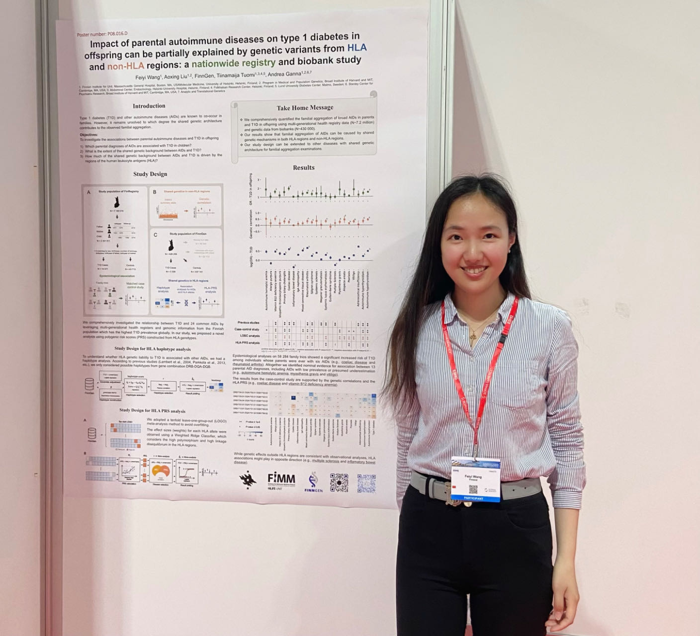

2023.06 - My first ESHG conference in Glasgow

2017.04 - Fight Cancer with NLP

2016.08 - Hot Spots Detection with Big Spatio-Temporal Data

2016.04 - Research Conference Data on Demand

2016.02 - Influenced Graphically Presented Reviews on Product Purchase

Graduate Research Innovation Exchange - First Place

With Prof. Elke Rundensteiner

With Prof. Diane Strong

With Prof. Fatemeh Emdad

Thank you!! :)
I am a researcher working at the intersection of data science and human genetics, with a focus on the genetic architecture
and familial aggregation of complex diseases. To better understand disease risk, inheritance, and prediction, my research
integrates large-scale population registries, biobank data, artificial intelligence, and statistical genetics methods, including
GWAS, heritability estimation, polygenic risk scores, family-based designs, etc.
I am particularly interested in diabetes, autoimmune and psychiatric diseases, and their progression over the life course.
Increasingly, my work aims to combine genetic data with multi-omics and machine learning approaches to gain deeper biological
insight. Beyond research, I enjoy photography, which offers a creative counterbalance to scientific work and shapes how I
observe patterns, structure, and detail—both in data and in the world around me.
I completed my PhD in Clinical Research at the Institute for Molecular Medicine Finland (FIMM), University of Helsinki, with
a thesis titled “Familial and genetic risk factors for autoimmune diseases”, supervised by
Andrea Ganna and Tiinamaija Tuomi
(see my defense talk on YouTube).
This PhD program was conducted in collaboration with the Usher Institute, University of Edinburgh, where my research topic was
about “Enhancing cardiovascular risk prediction in diabetes with deep learning model”, under the supervision of
Honghan Wu and Sarah Wild.
Prior to my PhD, I completed a graduate degree in Data Science at Worcester Polytechnic Institute in the US, with a capstone project titled “Natural language processing
aimed at improving cancer care”, supervised by Elke Rundensteiner
and Fatemeh Emdad, in collaboration with data scientists and clinicians
at Dana-Farber Cancer Institute, including Renato Umeton, Aymen Elfiky, and Charlotta Lindvall.
Wang F.*, Liu A.*, Yang, Z., Vartiainen, P., Jukarainen, S., Koskela, S., Oram R. A., Allen L., Ritari J., Partanen J., FinnGen, Perola M., Tuomi T.†, Ganna A.† (2025).
Effect of parental autoimmune diseases on type 1 diabetes in offspring can be partially explained by HLA and non-HLA
polymorphisms. Cell Genomics, 19, 100854.
Allara, E.*, Bell, S.*, Smith, R., Keene, S. J., Gill, D., Gaziano, L., Gysi D. M., Wang F., Tragante V., Mason A., Karthikeyan S., Lumbers R. T., Bonglack E., Ouwehand W., Roberts D. J., Dowsett J., Ostrowski S. R.,
Larsen M. H., Ullum H., Pedersen O. B., Brunak S., Banasik K., Erikstrup C., DBDS Genomic Consortium, FinnGen Consortium, ..., Danesh J.†, Pereira A.†, Wood A. M.†, Butterworth A. S.†, Di Angelantonio, E.† (2024).
Novel loci and biomedical consequences of iron homoeostasis variation.
Communications biology, 7(1), 1-17.
Loginovic P .*, Wang F.*, Li J*, Ferrat L., Mirshahi U. L., Rao H. S., Petzold A., Tyrrell J., Green H. D.,
Weedon M. N., Ganna A., Tuomi T., Carey D. J., UKBB Eye & Vision Consortium, FinnGen, Geisinger-
Regeneron DiscovEHR Collaboration, Oram R. A.†, Braithwaite T.† (2024).
Applying a genetic risk score
model to enhance prediction of future multiple sclerosis diagnosis at first presentation with optic neuritis.
Nature Communications, 15(1), 1415.
Viippola, E., Kuitunen, S., Rodosthenous, R. S., Vabalas, A., Hartonen, T., Vartiainen, P., Demmler J.,
Vuorinen A. L., Liu, A., Havulinna A. S., Llorens V., Detrois K. E., Wang, F., Ferro M., Karvanen A.,
German J., Jukarainen S., Gracia-Tabuenca J., Hiekkalinna T., Koskelainen S., Kiiskinen T., Lahtela E.,
Lemmela S., Paajanen T., Siirtola H., Reeve M. P., Kristiansson K., Brunfeldt M., Aavikko M., FinnGen,
Perola M.†, Ganna, A.† (2023).
Data Resource Profile: Nationwide registry data for high-throughput
epidemiology and machine learning (FinRegistry).
International Journal of Epidemiology, 52(4), e195-e200.
Scoring familial risks in 7M Finns using pedigree-based BLUP provides a unique angle to perceive
and predict human phenotypes. ESHG 2025 (Early Career Award Candidate)
Effect of parental autoimmune diseases on type 1 diabetes in offspring can be partially explained
by HLA and non-HLA polymorphisms: a nationwide registry and biobank study in 7.2M Finns. ESHG 2024 (Conference Fellowship of Excellence)
Impact of parental autoimmune diseases on type 1 diabetes in offspring can be partially explained
by genetic variants from HLA and non-HLA regions: a nationwide registry and biobank study. ASHG 2023
Impact of parental autoimmune diseases on type 1 diabetes in offspring can be partially explained
by genetic variants from HLA and non-HLA regions: a nationwide registry and biobank study. Nordic EMBL partnership meeting 2023
Can we improve multiple sclerosis risk stratification in optic neuritis patients presenting with
clinically isolated syndromes? Novel application of a multiple sclerosis genetic risk score. UK Neuro-Ophthalmology Society 2023 (Presented by Pavel Loginovic)
Beyond complexity: multi-source data integration enhances CVD risk prediction in T2D. ASHG 2025
Scoring familial risks in 7M Finns using a pedigree-based BLUP method provides a unique
angle to perceive and predict human phenotypes. ASHG 2024 (Reviewers’ Choice Abstract)
Familial aggregation of autoimmune diseases and type 1 diabetes in offspring. ESHG 2023
A smart question-answering tool for querying nationwide registry data. AI4Health 2022
Little facts and little stories about me
Klose once said, “I've always known what I was capable of, which is why I didn't lose my self-belief.” Starting from scratch in 2014, earning a master's degree in Data Science and getting a job in the healthcare field in 2017, I also believe that I have the ability to learn things fast and do things well if I have a chance and a belief. As a true devotee of healthcare data analytics, I believe the meaning of my life to learn cutting-edge knowledge and techniques in a field I have enthusiasm and save lives by utilization of the knowledge and techniques.
So...which topic are you interested in? Please click! :>